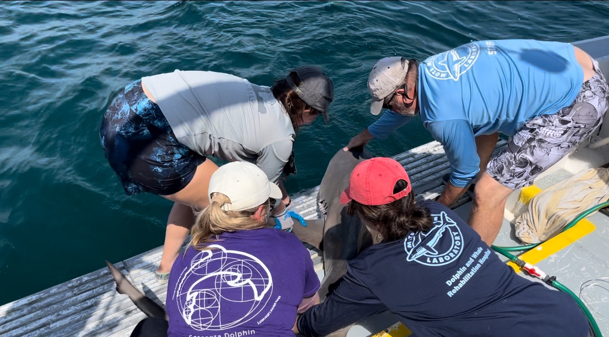
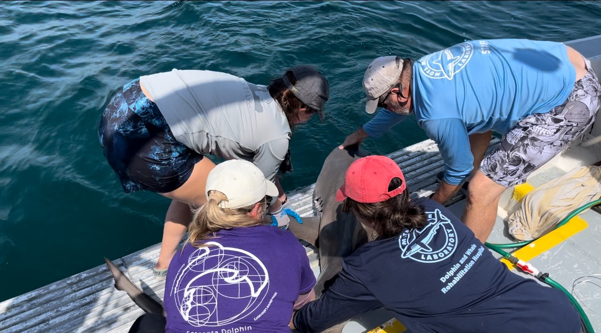

I am a marine ecologist working at the intersection of statistical modeling, long-term datasets, and ecological theory to understand how marine species respond to environmental change over time. My work connects field observations with predictive models to inform conservation and the management of coastal and pelagic ecosystems. I use species-distribution and environmental data to model and forecast population dynamics.
I am currently a Master’s student in the Biology Department at Western Washington University, advised by Dr. Alejandro Acevedo-Gutiérrez and Dr. Dietmar Schwarz in the Marine Mammal Ecology Lab. I study how increased presence of transient killer whales may influence harbor seal distribution and Pacific salmon consumption. I’m also pursuing a Graduate Certificate in Data Science to deepen my quantitative skills in R and Shiny.
I earned my Bachelor of Science in Marine Science (Marine Biology concentration) from the University of Maine in 2023. I investigated North Pacific humpback whale habitat shifts and population dynamics over ~20 years, informed by a semester at the University of Alaska Anchorage — Kachemak Bay Campus, where I completed the Semester by the Bay program and an Occupational Endorsement Certificate in Marine Mammal Science. In Alaska, I worked closely with Dr. Debbie Boege-Tobin and Marc Webber, learning the ins and outs of marine research.
I’ve carried out fieldwork in Maine, Alaska, Florida, and Washington, including behavioral observations, acoustic monitoring and analysis, purse seining, marine-mammal rescues, and necropsies.
Outside of research I love spending time outside with my dog Gully, hiking and swimming, and a enjoy spending time with a good book.

 
